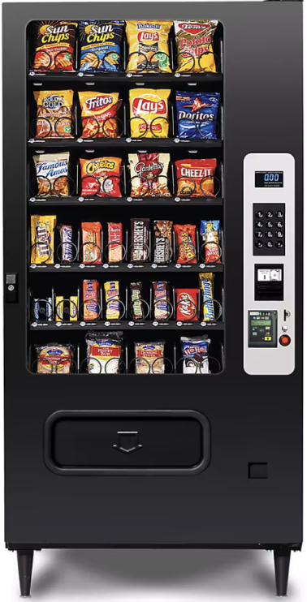
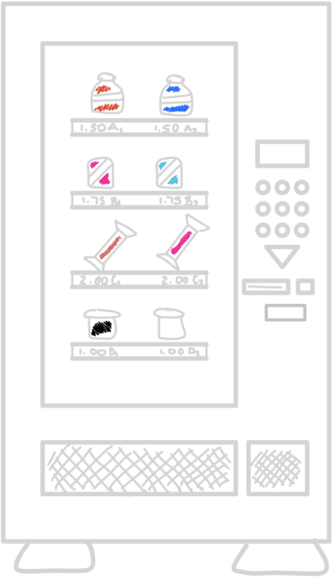
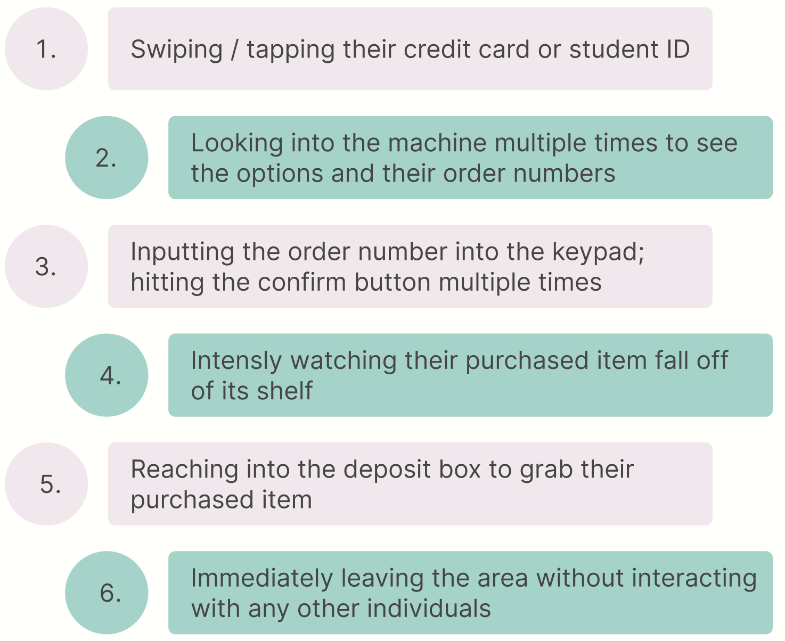
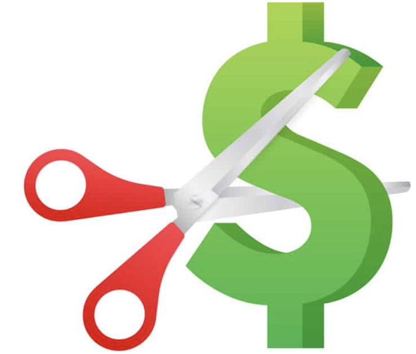
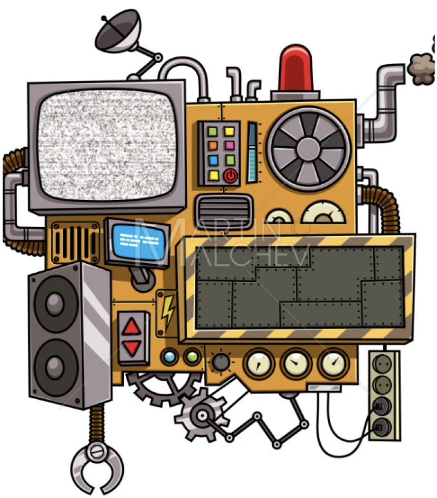
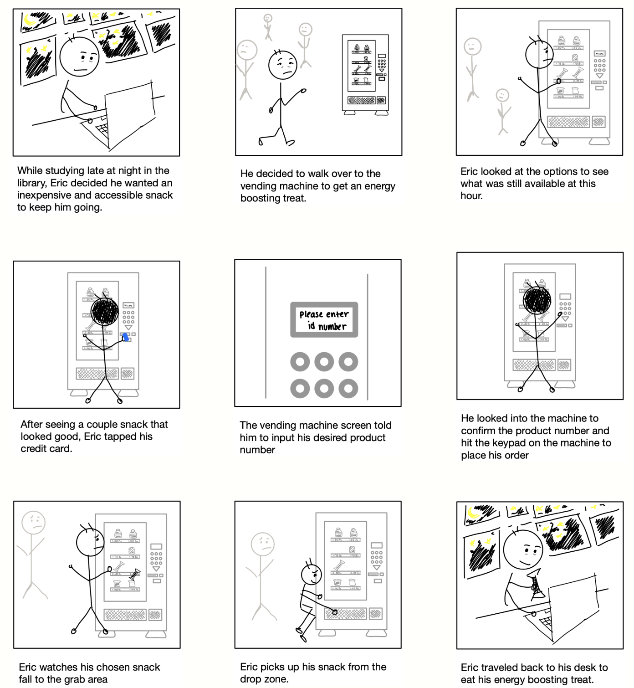

Person, Place, and Thing
A key aspect of working as a designer is identifying a target user and creating a product that attacks their needs as opposed to your own. Through my work of creating a storyboard, I was able to utilize observations, interviews, and personas to demonstrate an easy and comprehensive design visualization.
THE MACHINE
Products are created to solve a problem. In this case, vending machines are intended to be easy and intuitive machines, providing affordable and quick food or beverages. They exist all over public spaces, but are used largely in college campuses to provide a time-efficient solution to grabbing a bite to eat.

CONTEXT
While vending machines are widely used, insinuating intuitive use among a wide range of individuals, I conducted user interviews to locate specific target users and gather empirical observations about the usability of the product. I observed this common technical product to better understand a user’s needs and applied these observations to create personas that ultimately lead to a storyboard as a visualization of a user’s process.

UNDERSTANDING THE PRODUCT
To get a better understanding of the product’s features, I sketched out the design, including all integral components and pieces of machinery. I labeled and described each individual element to understand the importance and relationship of different pieces.
OBSERVATIONS AND RESEARCH
To gather ideas about the target user and their experience, I observed students using a snack vending machine at a Brown University library. I silently watched their purchasing process and followed up with unbiased questions about their experience issues.
Their ordering process had little variance with a linear timeline:

These users lacked particularly positive or negative emotions, besides for occasional confusion and frustration.
FINDINGS
From the three students I interviewed, I found that they were using the machine as a chance to grab a quick snack before committing to their studies. They mentioned the closeness of the food and the convenience of not having to leave the building to go to a dining hall to get something to eat. They also discussed the affordability and advantage of the cheap products.


The main recurring ideas were comments on the unappealing aesthetic of the machinery or the need for instructions or diagrams. The users mentioned the design was clean, but unexciting and ugly. They were not particularly drawn to the product due to its style and layout; they were more interacting with the machine for the end result and the lack of a similar, better designed product.
Many of the users had succumbed to the boring, if not unattractive design, by having a lack of improvements or revisions for the product. However, a user was practically scarred from her first experience with the equipment: she was unsure the order of steps to purchase a product and was quite confused with how the buttons and different components interacted. She said she spent what felt like “15 hours” trying to figure out the instructions and get her vending machine item. Her lack of familiarity with the UI was particularly impeding her usage and made her more hesitant to recommend or use the product again.

PERSONAS
To simply view target users of vending machines, I created two personas, one focusing on an exhausted college student looking for a late night snack and the other a confused child using the machine for the first time on their own.
Both of these individuals start the process a little confused or forgetful with how to begin. These potential users are both stressed by other users waiting their turn. However, one of the users has more experience with using the product and lets his mental capacity wander from the purchasing process.
THE STORY
Building off of these fictitious potential users, I designed a storyboard to offer a visual description of the usage process and how to navigate the product.

TAKEAWAYS
Through my observations, interviews, persona creations, and storyboard design, I gained a greater insight into how to find pain points and conduct user interviews, further understanding how these problems impact a user. I used my findings to shape how I think about target users and the process of working with a product.